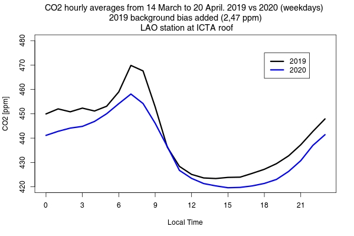

<!DOCTYPE html>
<html>
<head>
	<title>Quick Start - Leaflet</title>

	<meta charset="utf-8" />
	<meta name="viewport" content="width=device-width, initial-scale=1.0">
	
	<link rel="shortcut icon" type="image/x-icon" href="" />

    <link rel="stylesheet" href="https://unpkg.com/leaflet@1.6.0/dist/leaflet.css" integrity="sha512-xwE/Az9zrjBIphAcBb3F6JVqxf46+CDLwfLMHloNu6KEQCAWi6HcDUbeOfBIptF7tcCzusKFjFw2yuvEpDL9wQ==" crossorigin=""/>
    <script src="https://unpkg.com/leaflet@1.6.0/dist/leaflet.js" integrity="sha512-gZwIG9x3wUXg2hdXF6+rVkLF/0Vi9U8D2Ntg4Ga5I5BZpVkVxlJWbSQtXPSiUTtC0TjtGOmxa1AJPuV0CPthew==" crossorigin=""></script>
</head>
<body>
    <div id="mapid" style="width: 700px; height: 500px;"></div>
<script>

	var mapa = L.map('mapid').setView([41.425671, 2.137552], 11);
	
	L.tileLayer('https://api.mapbox.com/styles/v1/{id}/tiles/{z}/{x}/{y}?access_token=pk.eyJ1IjoibWFwYm94IiwiYSI6ImNpejY4NXVycTA2emYycXBndHRqcmZ3N3gifQ.rJcFIG214AriISLbB6B5aw', {
		maxZoom: 18,
		attribution: 'Map data &copy; <a href="https://www.openstreetmap.org/">OpenStreetMap</a> contributors, ' +
			'<a href="https://creativecommons.org/licenses/by-sa/2.0/">CC-BY-SA</a>, ' +
			'Imagery © <a href="https://www.mapbox.com/">Mapbox</a>',
		id: 'mapbox/streets-v11',
		tileSize: 512,
		zoomOffset: -1
	}).addTo(mapa);

var marker1 = L.marker([41.385315,2.1537998]).addTo(mapa);
marker1.bindPopup("<b>Eixample<b><br>",{maxWidth:650, height:340});
var marker2 = L.marker([41.386406,2.1873982]).addTo(mapa);
marker2.bindPopup("<b>Ciutadella<b><br>",{maxWidth:650, height:340});
var marker3 = L.marker([41.39872171,2.153398848]).addTo(mapa);
marker3.bindPopup("<b>Gracia <b><br>",{maxWidth:650, height:340});
var marker4 = L.marker([41.40388,2.204501]).addTo(mapa);
marker4.bindPopup("<b>Poblenou<b><br>",{maxWidth:650, height:340});
var marker5 = L.marker([41.37878,2.133099]).addTo(mapa);
marker5.bindPopup("<b>Sants<b><br>",{maxWidth:650, height:340});
var marker6 = L.marker([41.42611,2.1480017]).addTo(mapa);
marker6.bindPopup("<b>Vall Hebron<b><br>",{maxWidth:650, height:340});
var marker7 = L.marker([41.38749,2.1151996]).addTo(mapa);
marker7.bindPopup("<b>Palau Reial<b><br>",{maxWidth:650, height:340});
var marker8 = L.marker([41.41843,2.1238973]).addTo(mapa);
marker8.bindPopup("<b>Observatori Fabra<b><br>",{maxWidth:650, height:340});
var marker9 = L.marker([41.321487,2.0977015]).addTo(mapa);
marker9.bindPopup("<b>Prat-Jardins de la Pau<b><br>",{maxWidth:650, height:340});
var marker10 = L.marker([41.321774,2.0821]).addTo(mapa);
marker10.bindPopup("<b>Prat-CEM Sagnier<b><br>",{maxWidth:650, height:340});
var marker11 = L.marker([41.370476,2.1149993]).addTo(mapa);
marker11.bindPopup("<b>Hospitalet<b><br>",{maxWidth:650, height:340});
var marker12 = L.marker([41.31335,2.0136087]).addTo(mapa);
marker12.bindPopup("<b>Viladecans<b><br>",{maxWidth:650, height:340});
var marker13 = L.marker([41.476814,2.0889983]).addTo(mapa);
marker13.bindPopup("<b>Sant Cugat Vallès<b><br>",{maxWidth:650, height:340});
var marker14 = L.marker([41.447422,2.209497]).addTo(mapa);
marker14.bindPopup("<b>Santa Coloma de Gramanet<b><br>",{maxWidth:650, height:340});
var marker15 = L.marker([41.443985,2.2378986]).addTo(mapa);
marker15.bindPopup("<b>Badalona<b><br>",{maxWidth:650, height:340});
var marker16 = L.marker([41.303097,1.9914981]).addTo(mapa);
marker16.bindPopup("<b>Gavà<b><br>",{maxWidth:650, height:340});
var marker17 = L.marker([41.425594,2.2221997]).addTo(mapa);
marker17.bindPopup("<b>Sant Adrià de Besòs<b><br>",{maxWidth:650, height:340});
var marker18 = L.marker([41.48197,2.1882975]).addTo(mapa);
marker18.bindPopup("<b>Montcada i Reixac<b><br>",{maxWidth:650, height:340});
var marker19 = L.marker([41.512684,2.1253984]).addTo(mapa);
marker19.bindPopup("<b>Barberà del Vallès<b><br>",{maxWidth:650, height:340});
var marker20 = L.marker([41.4508,1.9748996]).addTo(mapa);
marker20.bindPopup("<b>Sant Andreu de la Barca<b><br>",{maxWidth:650, height:340});
var marker21 = L.marker([41.41528,1.9905012]).addTo(mapa);
marker21.bindPopup("<b>Pallejà<b><br>",{maxWidth:650, height:340});


var greenIcon = new L.Icon({
  iconUrl: 'https://cdn.rawgit.com/pointhi/leaflet-color-markers/master/img/marker-icon-2x-red.png',
  shadowUrl: 'https://cdnjs.cloudflare.com/ajax/libs/leaflet/0.7.7/images/marker-shadow.png',
  iconSize: [25, 41],
  iconAnchor: [12, 41],
  popupAnchor: [1, -34],
  shadowSize: [41, 41]
});


var markerICTA = L.marker([41.497640,2.108988],{icon: greenIcon}).addTo(mapa);
markerICTA.bindPopup("<b>ICTA<b><br>",{maxWidth:650, height:340});

</script>

</body>
</html>